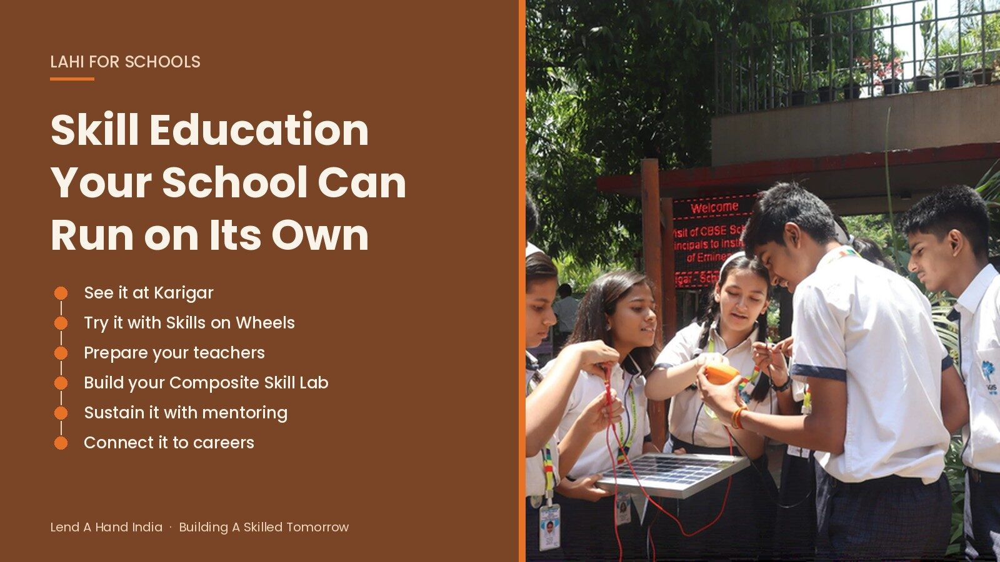
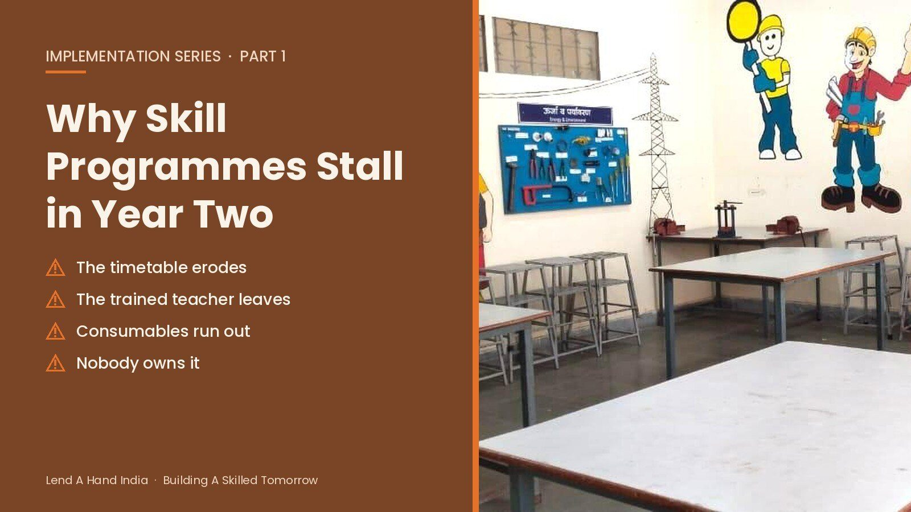
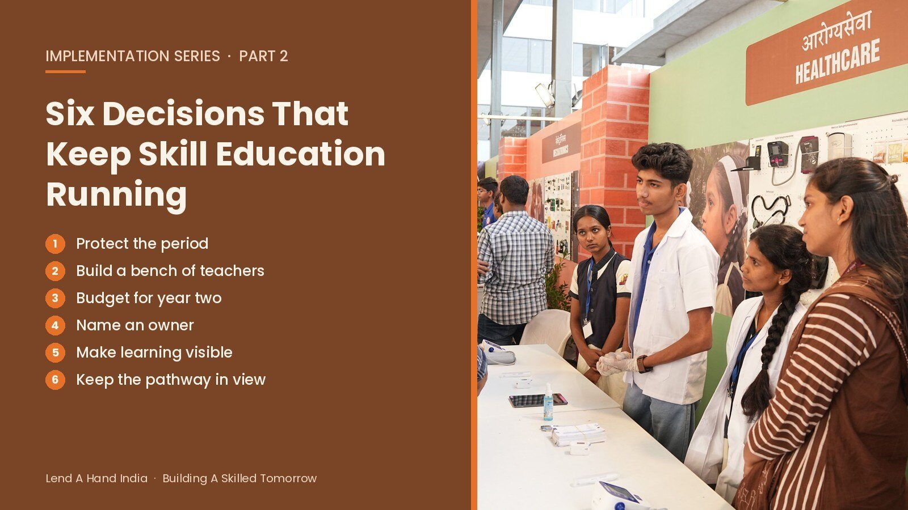
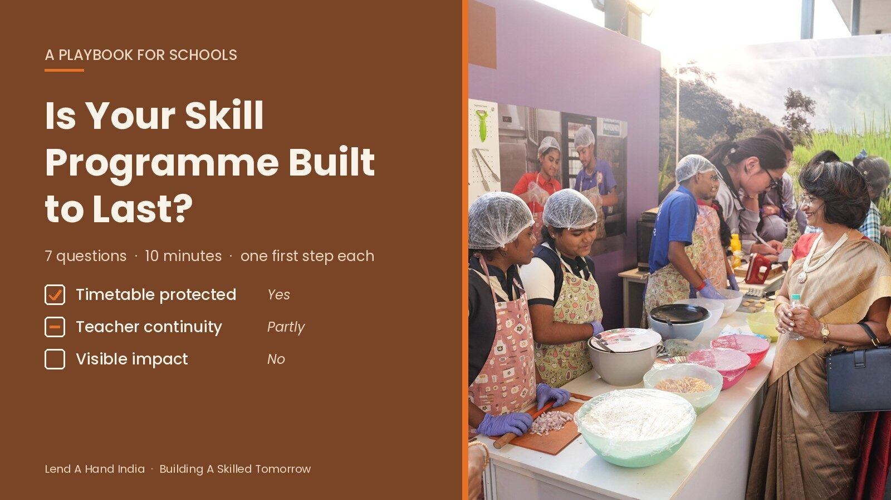
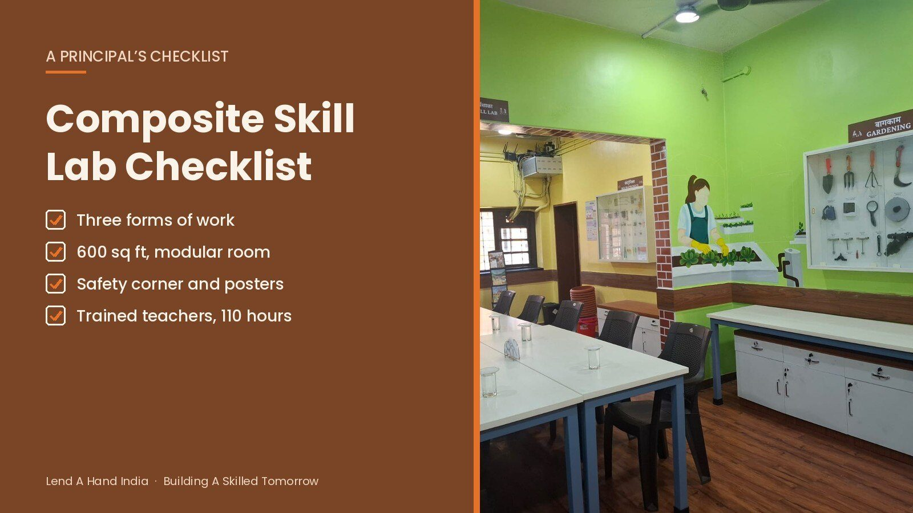
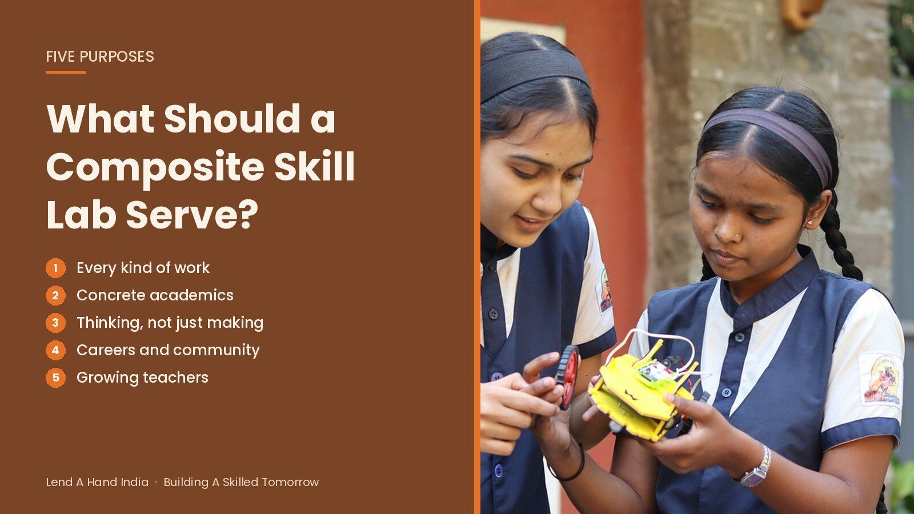
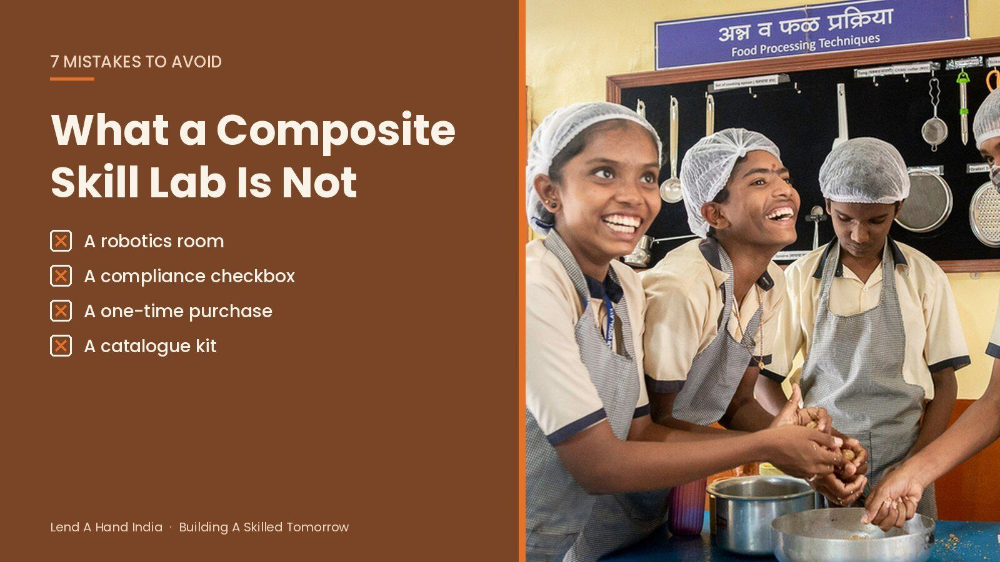

The LAHI Blog
Practical guidance for principals, trustees and academic heads on starting and sustaining skill education — teacher training, Composite Skill Labs, mentoring, careers and internships.

How Lend A Hand India Helps Schools Build Skill Education They Can Run on Their Own
Lend A Hand India is a skill education partner for schools: teacher training, Composite Skill Lab setup, career guidance and internships your school can run on its own.

Why Most School Skill Programmes Stall in Year Two
Most school skill programmes fade in year two, not at launch. Four places vocational education implementation in schools breaks down, and how to close the gap.

Six Decisions That Keep a School Skill Programme Running Beyond Year One
How to implement skill education in schools so it lasts: six decisions on timetable, teacher training, budget, ownership and the Class 6–10 pathway.

A Playbook for Schools: Is Your Skill Programme Built to Last?
A ten-minute skill education implementation checklist for schools: seven questions to test whether your programme will last, with warning signs and a first step for each.

Composite Skill Lab Checklist: What Every CBSE CSL Should Include
What does a Composite Skill Lab need? A principal’s summary of CBSE’s 2026–27 requirements: room, layout, equipment, signage, safety, AI and a ready checklist.

What Should a Composite Skill Lab Serve? Five Purposes Every Principal Should Plan For
The benefits of skill education for students: five purposes a Composite Skill Lab should serve, from concrete academics to careers, and how to check it is working.

What a Composite Skill Lab Is Not: Seven Misconceptions Principals Should Avoid
A Composite Skill Lab is not a robotics room, a compliance box or a renamed ATL. Seven common CSL mistakes, and what CBSE schools should do instead.